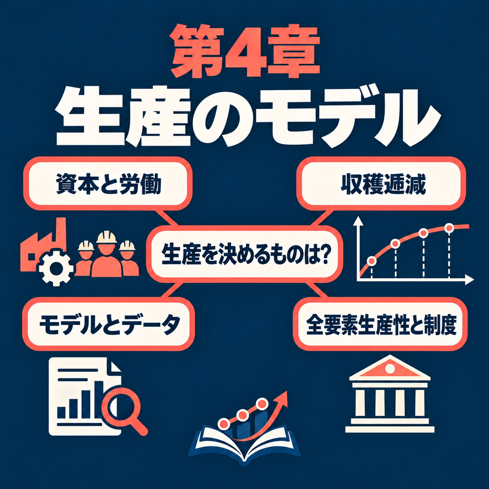

Host · 司会者ch04-t001
Welcome back. Today we are on a model of production: how a country turns its machines and workers into the things it makes. Let's start with a puzzle.
今回もよろしくお願いします。今日は、生産のモデルを取り上げます。国が機械と労働者を使って、どのように財を作るのかを考えます。まず、ある謎から始めましょう。
Carlos Mendez · 日本語版 · Chapter 4
英語原文と日本語訳を、音声に合わせて確認できます。

まず音声を聞き、必要に応じて英語原文と日本語訳を見比べてください。日本語能力試験N2程度の学習者を想定しています。専門用語はN2の範囲を超える場合があります。
English and Japanese passages follow the recording's speaker turns and section order. The Japanese is a draft translation reviewed for structure and key economic details; it has not been certified by a native-language editor.
Welcome back. Today we are on a model of production: how a country turns its machines and workers into the things it makes. Let's start with a puzzle.
今回もよろしくお願いします。今日は、生産のモデルを取り上げます。国が機械と労働者を使って、どのように財を作るのかを考えます。まず、ある謎から始めましょう。
Take the five richest countries in 2023, like Switzerland, Norway and Singapore. They produced about 82 times as much per person as the five poorest, like Burundi and Mozambique. So the average person in the richest group produces in about four and a half days what the average person in the poorest group produces in a whole year.
2023年に最も豊かだった5か国、たとえばスイス、ノルウェー、シンガポールを考えてみてください。これらの国々は、1人あたりで見ると、最も貧しかった5か国、たとえばブルンジやモザンビークの約82倍を生産していました。つまり、豊かな国々の平均的な人は、貧しい国々の平均的な人が1年間に生産する量を、わずか4日半ほどで生産していたのです。
Four and a half days against a whole year. Where does a gap like that come from?
4日半と1年間ですか。これほどの差は、どこから生まれるのでしょう。
There are two simple stories. Maybe rich countries have many more machines per worker. Or maybe they use their machines and workers much better.
単純に考えると、説明は二つあります。豊かな国には、労働者1人あたりの機械がずっと多いのかもしれません。あるいは、機械と労働者をずっと上手に使っているのかもしれません。
So here is today's question. Why are some countries so much richer than others: more machines, or better use of them?
今日の問いはこうですね。国によって豊かさに大きな差があるのはなぜでしょう。機械が多いからですか。それとも、機械をより上手に使うからですか。
By the end of this episode, you'll be able to do three things. First, explain why adding machines without adding workers raises output less and less, and how the market sets what machines and workers earn. Second, explain why a model in which countries differ only in machines predicts income gaps that are far too small. Third, explain how economists measure productivity, meaning how well a country uses its machines and workers. And explain why differences in productivity explain most of the gap between rich and poor countries.
このエピソードを聞き終わるころには、三つのことを説明できるようになるはずです。一つ目は、機械だけを増やしても、生産量の増え方が次第に小さくなる理由と、市場で機械と労働者の報酬がどう決まるかです。二つ目は、国による違いが機械の量だけだとするモデルでは、所得格差を実際よりずっと小さく予測してしまう理由です。三つ目は、経済学者が生産性、つまり国が機械と労働者をどれだけ上手に使うかをどう測るのか、そして生産性の違いが豊かな国と貧しい国の格差の大部分を説明する理由です。
And we'll follow the chapter's mind map part by part?
章のマインドマップを、項目ごとに見ていくのですね。
Yes. Part one builds the production model. Part two compares the model with data from many countries. Part three is about productivity and institutions, meaning the rules of a society. Each part has a few leaves, small topics we take in order.
はい。第1部では生産モデルを作ります。第2部では、多くの国のデータとモデルを比べます。第3部では、生産性と制度、つまり社会のルールを扱います。各部にはいくつかの小項目があり、順番に取り上げます。
Part one of the map: The production model. First, what do we mean by a model?
マップの第1部、「生産モデル」です。まず、モデルとは何でしょうか。
A small, simple economy described by a few equations. Let's visit Islandia, a small imaginary island country. Islanders make one all-purpose product, counted in tons per year. They need two inputs: workers, and machines like boats, nets and workshops. Economists call the machines capital.
いくつかの方程式で表した、小さく単純な経済です。小さな架空の島国、アイランディアを見てみましょう。島の人々は、年間生産量をトンで測れる単一の財を作っています。必要な投入物は二つです。労働者と、船、網、作業場のような機械です。経済学では、こうした機械を資本と呼びます。
And who does the producing?
誰が生産するのですか。
Many small, identical firms, each too small to change the wage or the rent of a machine. We treat them as one firm, Harbor Boatworks. It hires every worker, and it rents every machine from the people who own the machines.
多数の小さな同一企業です。それぞれの企業は小さいので、賃金も機械の賃貸料も変えられません。そこで、ハーバー・ボートワークスという一つの企業として考えます。この企業はすべての労働者を雇い、機械の所有者からすべての機械を借ります。
The first leaf is Cobb-Douglas production. That sounds scary.
最初の項目はコブ＝ダグラス型生産関数ですね。難しそうです。
It's just a recipe. A production function tells you how much output, the tons made in a year, you get from given machines and workers. Cobb-Douglas is one common recipe. Output equals productivity, times the machines raised to the power one third, times the workers raised to the power two thirds. Productivity is a number that says how well the inputs are used.
これは単なるレシピです。生産関数は、決まった量の機械と労働者を使うと、どれだけの生産物、つまり1年間に作るトン数が得られるかを示します。コブ＝ダグラス型は、よく使われるレシピの一つです。生産量は、生産性に、機械の3分の1乗と労働者数の3分の2乗を掛けたものです。生産性は、投入物をどれだけ上手に使っているかを示す数値です。
What does a power of one third mean, in plain words?
3分の1乗というのは、簡単に言うとどういう意味ですか。
It means the cube root. The cube root of twenty-seven is three, because three times three times three is twenty-seven. Now notice that the two powers, one third and two thirds, add up to one. So if Harbor Boatworks doubles both its machines and its workers, its output exactly doubles. Economists call this constant returns to scale.
立方根を取るという意味です。27の立方根は3です。3を3回掛けると27になるからです。ここで、3分の1乗と3分の2乗を足すと1になることに注目してください。ですから、ハーバー・ボートワークスが機械と労働者を両方とも2倍にすると、生産量もちょうど2倍になります。これを規模に関する収穫一定と呼びます。
That makes sense. The firm could open an identical copy of itself next door, and the copy would make as much as the original.
なるほど。企業は隣に自分と同じ企業をもう一つ作ることができて、その企業は元の企業と同じ量を生産できますね。
Exactly. A firm can always copy itself. That's also why many identical firms act like one big firm.
その通りです。企業はいつでも自分を複製できます。だから、同一の企業がたくさんある経済を、一つの大きな企業のように扱えるのです。
Next leaf: diminishing returns to capital. What if Harbor Boatworks adds machines, but no workers?
次の項目は、資本の限界収益逓減です。ハーバー・ボートワークスが労働者を増やさずに機械を増やしたら、どうなりますか。
Let's test it. The firm has 64 workers and one machine, and makes 16 tons a year. Now it rents 8 machines and keeps the same workers. How much does it make?
試してみましょう。この企業には労働者が64人いて、機械が1台あり、年間16トンを生産しています。そこで、労働者は同じまま、機械を8台借ります。生産量はどれくらいでしょう。
Eight times the machines, so I'd guess eight times the output. That's 128 tons.
機械が8倍なので、生産量も8倍だと思います。128トンですね。
That's the natural guess, but it's wrong. The firm makes only 32 tons. That's 8 times the machines, but only 2 times the output. With the workers fixed, output grows with the cube root of the machines. And the cube root of eight is two, because two times two times two is eight.
それは自然な予想ですが、違います。企業が作るのは32トンだけです。機械は8倍ですが、生産量は2倍にしかなりません。労働者数を固定すると、生産量は機械の立方根に比例して増えます。8の立方根は2です。2を3回掛けると8になるからです。
Why does each extra machine help less?
なぜ機械を1台増やすごとの効果が小さくなるのでしょう。
With one machine, all the workers share it, so a second machine is very useful. With eight machines, each machine has fewer workers to run it, so one more adds much less. That's diminishing returns: each extra machine adds less output than the one before. Even doubling the machines multiplies output by only the cube root of two, about 1.26. That's a rise of about 26 percent.
機械が1台しかないと、労働者全員でそれを使うので、2台目はとても役に立ちます。機械が8台あると、それぞれの機械を動かす労働者は少なくなるので、もう1台追加しても生産への上乗せはずっと小さくなります。これが限界収益逓減です。機械を1台追加するごとに、増える生産量が前の1台より小さくなります。機械を2倍にしても、生産量は立方根の2倍、約1.26倍にしかなりません。増加率にすると約26％です。
Wait. Doubling everything doubled output. Isn't that a contradiction?
ちょっと待ってください。すべてを2倍にすると生産量も2倍になるのに、矛盾しませんか。
No. Constant returns is about doubling all the inputs together. Diminishing returns is about adding one input alone. When the workers double too, no machine loses workers to run it.
いいえ。規模に関する収穫一定は、すべての投入物を同時に2倍にする場合の話です。限界収益逓減は、一つの投入物だけを増やす場合の話です。労働者数も2倍になれば、機械を動かす人が不足することはありません。
Next leaf: markets clear. How does Harbor Boatworks decide how many machines and workers to use?
次の項目は、市場が均衡することです。ハーバー・ボートワークスは、機械と労働者を何人、何台使うか、どうやって決めるのですか。
Two new terms first. The marginal product of capital, MPK for short, is the extra output from one more machine, with the same workers. The marginal product of labor, MPL, is the extra output from one more worker, with the same machines. The firm rents machines until the MPK equals the rent. And it hires workers until the MPL equals the wage.
その前に、新しい用語を二つ紹介します。資本の限界生産物、略してMPKは、労働者数を同じに保ったまま機械を1台増やしたときに増える生産量です。労働の限界生産物、略してMPLは、機械の台数を同じに保ったまま労働者を1人増やしたときに増える生産量です。企業は、MPKが賃貸料と等しくなるところまで機械を借ります。また、MPLが賃金と等しくなるところまで労働者を雇います。
Why stop exactly there?
なぜ、ちょうどそこで止めるのですか。
Before that point, one more machine adds more output than it costs, so profit rises. Beyond it, the last machine costs more than it adds, so the firm gains by giving it back.
その点より手前では、機械をもう1台使うことで増える生産量が、機械の費用を上回るため、利益が増えます。それより先では、最後の1台の費用が、それによって増える生産量を上回るため、機械を返したほうが企業にとって得になります。
And what sets the rent and the wage?
では、賃貸料と賃金を決めるのは何ですか。
The markets. Islandia has a fixed number of machines and workers. The rent and the wage move until Harbor Boatworks wants exactly all of them. Economists say the markets clear. So no machine stays unused, and every islander who can work has a job.
市場です。アイランディアには、機械と労働者の数が決まっています。ハーバー・ボートワークスがそのすべてを使いたいと思うところまで、賃貸料と賃金が動きます。経済学では、市場が均衡すると言います。ですから、使われない機械はなく、働くことができる島民は全員、仕事に就きます。
Next leaf: who gets what. How is the output shared?
次の項目は、誰が何を得るかです。生産物はどのように分けられるのでしょう。
Workers get two thirds of output as wages, and machine owners get one third as rent. Take the 32 tons from our experiment. About 21 tons go to the workers, and about 11 to the machine owners.
労働者は、生産物の3分の2を賃金として受け取り、機械の所有者は3分の1を賃貸料として受け取ります。先ほどの例で生産した32トンを考えてください。約21トン分が労働者に、約11トン分が機械の所有者に渡ります。
Why exactly one third and two thirds? Is that luck?
なぜ、ちょうど3分の1と3分の2なのですか。たまたまですか。
No, it comes from the recipe. In this recipe, one more machine always adds one third of what an average machine makes. Pay every machine that amount, and the machines together get one third of output. Workers, in the same way, get two thirds. And economists chose the power one third to match the data. In the U.S., capital earns roughly a third of GDP, the value of everything the country produces.
いいえ。生産関数のレシピから決まります。このレシピでは、機械を1台追加すると、平均的な機械が作る量の3分の1だけ生産量が増えます。すべての機械にその分を支払うと、機械全体で生産量の3分の1を受け取ります。同じように、労働者は3分の2を受け取ります。また経済学者は、データに合うように、機械の指数を3分の1にしました。アメリカでは、資本がGDP、つまり国が生産するすべてのものの価値の、およそ3分の1を得ています。
So one third plus two thirds is everything. Nothing is left for the firm?
3分の1と3分の2を足すとすべてになりますね。企業には何も残らないのですか。
Right. Economic profit, what is left after paying for every input, is zero. That's what we expect when many firms compete.
その通りです。経済利潤、つまりすべての投入物に支払ったあとに残るものはゼロです。多くの企業が競争する状況では、そうなると予想されます。
But then why do people buy shares in companies?
でも、それなら、なぜ人々は企業の株を買うのでしょうか。
A lot of students think zero profit means the company's owners, its shareholders, get nothing. But in our model, the firm rents its machines. Real companies usually own their machines, so their shareholders are also the machine owners. The rent for the machines stays in the company as accounting profit, the profit in company reports. That's the income of capital, one third of output. And a share, a small piece of a company, gives you a right to part of that income.
多くの学生は、利潤がゼロなら企業の所有者、つまり株主には何も入らないと考えます。しかし、このモデルでは、企業は機械を借りています。実際の企業は普通、自分で機械を所有しているので、株主は機械の所有者でもあります。機械の賃貸料は企業内に残り、会計上の利益、つまり企業の報告書に記載される利益になります。これは資本の所得であり、生産量の3分の1です。株式とは企業の小さな持ち分で、その一部の所得を受け取る権利を与えてくれます。
That brings us to the last leaf: capital income and the stock market.
これで最後の項目、「資本所得と株式市場」につながります。
The S&P 500 is an index, one number that follows the share prices of five hundred large U.S. companies. Divide it by an index of consumer prices, and you remove inflation, the general rise in prices. That gives the real index. Today it is about 50 times as high as in 1920.
S&P 500は指数です。アメリカの大企業500社の株価を追う、一つの数値です。これを消費者物価指数で割ると、物価の全般的な上昇であるインフレの影響を取り除けます。こうして得られるのが実質指数です。現在、この指数は1920年の約50倍です。
50 times! So the stock market only goes up?
50倍ですか。では、株式市場は上がる一方なのですか。
Not at all. There were deep falls, like the crash after the 1929 peak, and the low point in 2009.
まったく違います。1929年のピーク後の暴落や、2009年の底値のように、大幅な下落もありました。
So in part one we saw that doubling everything doubles output, but adding machines alone helps less and less. And paying each input what its last unit adds gives workers two thirds and machine owners one third.
では第1部では、すべてを2倍にすると生産量も2倍になる一方で、機械だけを増やすと、その効果が次第に小さくなると学びました。そして、それぞれの投入物に最後の1単位が生み出す分を支払うと、労働者は3分の2、機械の所有者は3分の1を受け取ります。
Yes. Next branch: we take this model to real countries.
その通りです。次の部では、このモデルを現実の国に当てはめます。
Part two of the map: The model meets the data. What's the first leaf?
マップの第2部、「モデルとデータ」です。最初の項目は何でしょう。
Income per person. Living standards depend on output per person, not on total output. Every ton is paid out as wages or rent, so output per person is also income per person. And because doubling machines and workers together doubles output, output per worker depends only on machines per worker.
1人あたり所得です。生活水準を決めるのは、総生産量ではなく、1人あたりの生産量です。どのトンも賃金か賃貸料として支払われるので、1人あたり生産量は1人あたり所得でもあります。また、機械と労働者を同時に2倍にすると生産量も2倍になるため、労働者1人あたりの生産量を決めるのは、労働者1人あたりの機械の量だけです。
So Islandia's income per person depends on two things: its productivity and its machines per worker.
つまり、アイランディアの1人あたり所得は、生産性と労働者1人あたりの機械の量の二つで決まるのですね。
Exactly. Income per person equals productivity times the cube root of machines per worker, which economists call capital per person. Everybody works here, so per worker and per person are the same. Productivity raises income one for one: 10 percent more productivity, 10 percent more income. Machines per worker raise income too, but through the cube root, so with diminishing returns.
その通りです。1人あたり所得は、生産性に、労働者1人あたりの機械の立方根を掛けたものです。経済学ではこれを1人あたり資本と呼びます。このモデルでは全員が働くので、労働者1人あたりと1人あたりは同じです。生産性が上がると、所得も同じ割合で上がります。生産性が10％上がれば、所得も10％上がります。労働者1人あたりの機械の量も所得を上げますが、立方根を通じて作用するため、限界収益逓減があります。
Next leaf: equal productivity, capital only. What does that mean?
次の項目は「生産性が同じで、資本だけが違う」です。どういう意味ですか。
We can count machines, but we can't count productivity directly. So the first test gives every country the same productivity, and only capital differs. We compare each country with the United States. In 2023, China had about 35 percent of U.S. capital per person.
機械の数は数えられますが、生産性を直接数えることはできません。そこで最初の検証では、すべての国で生産性が同じだとし、資本だけが異なると考えます。それぞれの国をアメリカと比べます。2023年、中国の1人あたり資本は、アメリカの約35％でした。
And what income does the model predict for China?
では、モデルは中国の所得をどれくらいと予測しますか。
Write 35 percent as 0.35. Its cube root is about 0.71. So the model predicts that China has about 71 percent of U.S. income per person.
35％を0.35と書きます。その立方根は約0.71です。ですから、モデルは中国の1人あたり所得を、アメリカの約71％と予測します。
Next leaf: the model's predictions miss. How badly?
次の項目は「モデルの予測は外れる」です。どれくらい大きく外れるのでしょう。
Take Burundi, one of the poorest countries. It has less than 1 percent of U.S. capital per person. What income would you guess the model predicts?
最も貧しい国の一つ、ブルンジを見てみましょう。ブルンジの1人あたり資本は、アメリカの1％未満です。モデルはどれくらいの所得を予測すると思いますか。
Less than 1 percent of the machines, so about 1 percent of U.S. income?
機械がアメリカの1％未満なので、所得もアメリカの約1％だと思いますか。
That's the tempting answer, but no. The cube root shrinks the gap. The cube root of a tiny number is not so tiny. So the model predicts that Burundi has about one sixth of U.S. income per person. In fact, Burundi has only about one seventy-fourth. Average income in the United States is about 74 times Burundi's, not 6 times.
そう考えたくなりますが、違います。立方根を取ると、差は小さくなります。とても小さな数でも、その立方根はそれほど小さくありません。ですから、モデルはブルンジの1人あたり所得を、アメリカの約6分の1と予測します。実際には約74分の1です。アメリカの平均所得はブルンジの約74倍であり、6倍ではありません。
Is Burundi just one bad case?
ブルンジだけの特殊な例でしょうか。
No, it happens almost everywhere. Compare the model's prediction with actual income for 110 countries. Of these countries, 95 percent are poorer than the model predicts from their machines. The typical country is predicted to be about 2.8 times as rich as it really is.
いいえ。ほとんどどこでも同じことが起きます。110か国について、モデルの予測と実際の所得を比べてみましょう。そのうち95％の国では、機械の量からモデルが予測した所得より、実際の所得のほうが低いのです。典型的な国の場合、モデルは実際より約2.8倍も豊かだと予測しています。
So the model's gaps are far too small. Then why not change the recipe? Give capital a bigger power than one third, and the gaps get bigger.
つまり、モデルが予測する格差は小さすぎるのですね。では、レシピを変えたらどうでしょう。資本の指数を3分の1より大きくすれば、格差も大きくなります。
It's a fair idea, but it doesn't work. To make income gaps as big as the gaps in machines, the power would have to be about one. But from part one, the power on capital equals capital's share of income. In the data, that share is about one third, far below one. So we keep the one third, and we drop the other assumption, equal productivity.
もっともな考えですが、うまくいきません。機械の量の格差と同じくらい所得格差を大きくするには、指数を約1にする必要があります。しかし、第1部で見たように、資本にかかる指数は、所得に占める資本の割合と等しくなります。データでは、その割合は約3分の1で、1をずっと下回ります。そこで3分の1はそのままにして、別の仮定、つまり生産性が同じという仮定を外します。
So in part two we saw that machines per worker differ hugely across countries, but the cube root shrinks those differences in income. With equal productivity, poor countries should be much richer than they are.
第2部では、国によって労働者1人あたりの機械の量は大きく違うものの、立方根を取ると所得の差は小さくなることが分かりました。生産性が同じなら、貧しい国は実際よりずっと豊かなはずです。
Right. So something other than machines must make poor countries poor. That's the last branch.
その通りです。ですから、貧しい国を貧しくしているのは、機械以外の何かです。これが最後の部です。
Part three of the map: TFP and institutions. What is TFP?
マップの第3部、「全要素生産性と制度」です。全要素生産性とは何ですか。
TFP stands for total factor productivity. Economists call the inputs, machines and workers, factors of production. So TFP means how productive all the inputs are together. It's the productivity number in our recipe. The first leaf is TFP as the residual.
TFPは、全要素生産性の略です。経済学者は機械と労働者を生産要素と呼びます。ですから、TFPは、すべての投入物を合わせた生産性のことです。生産関数のレシピにある生産性の数値に当たります。最初の項目は、残差としてのTFPです。
Residual? You mean what's left over?
残差ということは、最後に残るものですか。
Exactly. We can't count TFP, but we can count income and machines. So we assume the model is right, and ask what productivity makes it fit exactly. Whatever income the machines cannot explain goes into TFP. Let's build China's number step by step.
その通りです。TFPは直接数えられませんが、所得と機械は数えられます。そこでモデルが正しいと仮定し、実際の所得にぴったり合う生産性を求めます。機械では説明できない所得は、すべてTFPに含めます。中国の数値を、順番に計算しましょう。
Okay. Where do we start?
分かりました。何から始めますか。
Step one is the machines. China has about 35 percent of U.S. capital per person. As we saw, the cube root turns that into about 71 percent of U.S. income, with U.S. productivity. Step two is reality. China's actual income per person is only about 30 percent of the U.S. level.
ステップ1は機械です。中国の1人あたり資本は、アメリカの約35％です。先ほど見たように、アメリカと同じ生産性を仮定すると、立方根を取って、アメリカの約71％の所得になると予測されます。ステップ2は現実の数値です。中国の実際の1人あたり所得は、アメリカの水準の約30％にすぎません。
So the machines alone predict 71, and China gets 30. Is step three a division?
機械だけなら71％と予測するのに、中国は30％なのですね。ステップ3では割り算をしますか。
Yes. Income is productivity times what the machines give. So productivity is income divided by what the machines give: 30 divided by 71, about 0.42. That's China's TFP. With the same machines per worker, a worker in China produces about 42 percent of what a U.S. worker produces.
はい。所得は、生産性に機械がもたらす分を掛けたものです。ですから、生産性は、所得を機械がもたらす分で割れば求められます。30を71で割ると約0.42です。これが中国のTFPです。労働者1人あたりの機械の量が同じなら、中国の労働者が生産する量は、アメリカの労働者の約42％です。
Next leaf: capital or TFP? Here's my guess. Give a poor country as many machines per worker as the United States, and it would be about as rich.
次の項目は「資本かTFPか」です。貧しい国に、アメリカと同じだけの機械を労働者1人あたりで持たせれば、同じくらい豊かになると思います。
Many people hope so, but the numbers say no. Take Burundi again. Its machines predict one sixth of U.S. income, but it has one seventy-fourth. 74 divided by 6 is about 12, so Burundi's TFP is about one twelfth of the U.S. level. Give it U.S. machines per worker, and TFP is the only difference left. It would still have only about one twelfth of U.S. income.
そうなってほしいと思う人は多いですが、数値はそう示していません。再びブルンジを考えましょう。機械からはアメリカの所得の6分の1と予測されますが、実際には74分の1です。74を6で割ると約12なので、ブルンジのTFPはアメリカの約12分の1です。アメリカと同じ機械を労働者1人あたりで持たせても、残る違いはTFPだけです。所得は、それでもアメリカの約12分の1にとどまります。
And the gap of 82 times from the start? How much is capital, and how much is TFP?
最初に出てきた82倍の格差はどうでしょう。資本の差とTFPの差は、それぞれどれくらいですか。
We can split that gap into two parts that multiply. Differences in capital per person, through the cube root, make the five richest countries about 5.2 times as rich as the five poorest. Differences in TFP make them another 15.9 times as rich. Multiply the two, and you get back the gap of about 82. The lesson for governments: more investment helps, but most of the possible gain is in raising productivity.
この格差を、掛け合わせる二つの部分に分けられます。1人あたり資本の差は、立方根を通じて、最も豊かな5か国を最も貧しい5か国の約5.2倍の豊かさにします。TFPの差は、さらに約15.9倍の豊かさをもたらします。二つを掛けると、約82倍の格差に戻ります。政府への教訓はこうです。投資を増やすことも役に立ちますが、得られる可能性のある利益の大部分は、生産性を高めることから生まれます。
Next leaf: why does TFP differ? I'd guess technology. Poor countries use older machines and methods.
次の項目は「TFPの差はなぜ生まれるのか」です。技術だと思います。貧しい国は、古い機械や方法を使っているのでしょう。
Technology is part of it. But a lot of students think TFP is only technology, and that's too narrow. TFP is a residual: it collects everything except machines, and the model measures it without explaining it. There are four main candidates. Institutions, like property rights, so no one can take what you own, and fair courts. Misallocation, which means machines and workers are in the wrong firms. Skills, because the recipe counts workers, but not what they know. And technology, the methods a country knows how to use.
技術もその一部です。しかし、TFPは技術だけだと考える学生は多いのですが、それでは狭すぎます。TFPは残差です。機械以外のすべてをまとめて含み、モデルはそれを測るものの、理由までは説明しません。主な要因は四つあります。制度、たとえば所有物を奪われない財産権や、公正な裁判所です。資源配分の非効率、つまり機械や労働者が適切でない企業に割り当てられていることです。技能です。この生産関数は労働者の人数を数えますが、その人たちの知識は数えません。そして技術、つまりその国が利用できる方法です。
Start with institutions. How can anyone measure their effect?
制度から始めましょう。その影響は、どうすれば測れますか。
History gives us natural experiments, cases where history ran the experiment for us. Korea was once one country, and it was split in two. North and South share a history and a culture, but they got very different rules. Today, a satellite photo of Korea at night shows the South full of light. The North is almost completely dark, except for its capital city, Pyongyang.
歴史が自然実験を与えてくれることがあります。自然実験とは、歴史が私たちの代わりに実験を行った事例です。かつて朝鮮半島は一つの国でしたが、二つに分かれました。北朝鮮と韓国は歴史と文化を共有していますが、まったく異なるルールのもとに置かれました。現在、夜の朝鮮半島を写した衛星写真を見ると、韓国は光に満ちています。北朝鮮は首都の平壌を除いて、ほとんど真っ暗です。
So the same people, under different rules, now have very different incomes.
同じ人々なのに、異なるルールのもとで、今では所得に大きな差があるのですね。
Yes. Property rights and fair courts make it worth investing in machines, skills and new methods. They also let the best firms grow, so the same machines and workers produce more. That's higher TFP.
はい。財産権と公正な裁判所があれば、機械や技能、新しい方法に投資する価値が生まれます。また、最も優れた企業が成長できるので、同じ機械と労働者から、より多く生産できます。これがTFPの上昇です。
And misallocation? Can you give an example?
資源配分の非効率はどうでしょう。例を挙げてもらえますか。
Imagine two firms that import car parts. One is new, with modern methods. The other is old and slow, but its owner is a friend of a powerful politician. So the old firm gets cheap loans and licenses, and keeps machines and workers that the new firm would use better. The country has the same inputs but produces less, so its measured TFP is lower.
自動車部品を輸入する企業が二つあると想像してください。一つは新しく、現代的な方法を使っています。もう一つは古くて効率が悪いのですが、その所有者は有力な政治家の友人です。そのため、古い企業は安い融資と営業許可を得て、新しい企業ならもっと上手に使うはずの機械と労働者を抱え続けます。その国にある投入物は同じでも、生産量は少なくなります。したがって、測定されるTFPも低くなります。
Last leaf: reform, big bang or gradual. What does that mean?
最後の項目は改革です。急進的に一度に進めるのか、徐々に進めるのか。どういう意味でしょう。
Russia and China both moved away from central planning, where the state runs the economy, toward markets. After 1990, Russia changed its institutions fast, all at once: a big bang. China changed step by step, and let markets grow beside the old planned economy.
ロシアと中国は、国が経済を運営する中央計画から、市場へと移行しました。1990年以降、ロシアは制度を一度に急速に変えました。これが「ビッグバン」です。中国は段階的に変え、古い計画経済の隣で市場を成長させました。
So which one did better? My guess is the big bang. Put the good rules in place fast, and growth follows.
では、どちらがうまくいきましたか。ビッグバンだと思います。良いルールを早く整えれば、成長が続くはずです。
That's what many economists expected at the time, but no. In the 1990s, Russia's income per person fell by 49 percent. It took until 2006 to get back to where it started.
当時は多くの経済学者がそう予想しましたが、そうはなりませんでした。1990年代、ロシアの1人あたり所得は49％下がりました。元の水準に戻ったのは2006年です。
Almost half! And China?
ほぼ半分ですね。中国はどうでしたか。
China grew about 8 percent a year from 1990 to 2019, a steady pace for almost three decades.
中国は1990年から2019年まで、約8％の成長をほぼ30年間続けました。
So gradual reform is the answer?
では、段階的な改革が答えなのでしょうか。
Economists still disagree about that. China started as a poor, rural country, while Russia was already industrial. And some fast reformers, like Poland, did much better than Russia. One way to see it with our model: if Russia's machines and workers stayed roughly the same, its fall in income was a fall in TFP. For policy, how institutions change can matter as much as which institutions a country finally has.
その点については、経済学者の間でも意見が分かれています。改革が始まった時点で、中国は貧しい農村国でしたが、ロシアはすでに工業国でした。また、ポーランドのように、急速に改革を進めてロシアよりずっとうまくいった国もあります。私たちのモデルを使って考えると、ロシアの機械と労働者の数がほぼ同じままだったなら、所得の低下はTFPの低下だったことになります。政策については、どの制度を最終的に持つかと同じくらい、制度をどのように変えるかも重要です。
So in part three we measured TFP as the income that machines can't explain, and it explains most of the gap between rich and poor. Institutions, misallocation, skills and technology all shape it, and so does the way a country reforms.
第3部では、機械では説明できない所得としてTFPを測り、それが豊かな国と貧しい国の格差の大部分を説明することを学びました。制度、資源配分の非効率、技能、技術、そして改革の進め方もTFPを左右します。
Exactly. Let's sum up.
その通りです。まとめましょう。
Let's go back to our three goals. First, why does adding machines alone raise output less and less?
最初の三つの目標に戻りましょう。一つ目、機械だけを増やすと、生産量の増え方が次第に小さくなるのはなぜですか。
Because each new machine has fewer workers to run it. So with the same workers, 8 times the machines give only 2 times the output. And paying each input what its last unit adds gives workers two thirds and machine owners one third.
新しい機械を動かす労働者が、それだけ少なくなるからです。ですから、労働者数が同じなら、機械を8倍にしても生産量は2倍にしかなりません。また、投入物それぞれに最後の1単位が生み出す分を支払うと、労働者は3分の2、機械の所有者は3分の1を受け取ります。
Second, the model with equal productivity predicts gaps that are too small. I'd say that's because of the cube root. It turns big gaps in machines into small gaps in income.
二つ目、生産性が同じというモデルは、格差を小さく予測しすぎます。立方根のせいですね。機械の大きな格差を、所得の小さな格差に変えてしまいます。
Yes. Burundi is predicted to have one sixth of U.S. income, but it has one seventy-fourth.
そうです。ブルンジの所得はアメリカの6分の1と予測されますが、実際は74分の1です。
And third, rich versus poor.
そして三つ目、豊かな国と貧しい国の違いです。
We measure TFP as actual income divided by what the machines alone predict. Between the five richest and the five poorest countries, capital explains a gap of about 5 times, and TFP a gap of about 16 times. So here is the big message. Capital per person explains only a small part of the gap between rich and poor countries. Most of it is total factor productivity: how well countries use the machines and workers they have.
TFPは、実際の所得を、機械だけからモデルが予測する所得で割って測ります。最も豊かな5か国と最も貧しい5か国の間では、資本が説明する格差は約5倍、TFPが説明する格差は約16倍です。大事なメッセージはこうです。1人あたり資本が説明するのは、豊かな国と貧しい国の格差の一部にすぎません。その大部分を占めるのは全要素生産性、つまり各国が保有する機械と労働者をどれだけ上手に使うかです。
Here's a question to think about. Islandia wants to double its income per person. Plan one: more machines per worker, with the same productivity. How many times as many machines per worker would it need? Plan two: higher productivity, with the same machines. How much higher would productivity have to be?
考えてみてほしい問いがあります。アイランディアは、1人あたり所得を2倍にしたいと思っています。計画1は、生産性を同じに保ち、機械を増やす方法です。労働者1人あたりの機械を何倍にする必要があるでしょう。計画2は、機械の量を同じに保ち、生産性を上げる方法です。生産性をどれくらい上げればよいでしょう。
Pause the episode and think about it for a moment.
いったんエピソードを止めて、少し考えてみてください。
Okay, we're back. What's the answer?
お待たせしました。答えは何ですか。
Plan one needs 8 times as many machines per worker, because income grows with the cube root of machines, and the cube root of eight is two. Plan two only needs productivity to double, because income rises one for one with it. And there's a bonus. Higher productivity makes each machine produce more, so investing in new machines pays more too.
計画1では、労働者1人あたりの機械を8倍にする必要があります。所得は機械の立方根に応じて増え、8の立方根は2だからです。計画2では、生産性を2倍にするだけで十分です。所得は生産性と同じ割合で増えるからです。さらに、生産性が高まると、機械1台あたりの生産量も増えるため、新しい機械への投資もより高い利益を生みます。
Where can students try all this themselves?
学生は、どこでこれを自分で試せますか。
Open the chapter's Colab notebook to run everything yourself. The Model Apps let you move the model's sliders without code. The Data Apps show the stock market and the country data.
章のColabノートブックを開けば、すべて自分で実行できます。Model Appsでは、コードを書かずにモデルのスライダーを動かせます。Data Appsでは、株式市場と各国のデータを確認できます。
And next time?
次回は何を扱いますか。
In this chapter, the number of machines was fixed. In Chapter 5, the Solow growth model explains where machines come from: saving and investment, minus the machines that wear out. We ask: can saving and investing in machines make a country rich forever?
この章では、機械の数を固定していました。第5章では、ソロー成長モデルを使って、機械がどこから来るのかを説明します。貯蓄と投資から、使い古される機械を差し引いて考えます。貯蓄と機械への投資で、国を永遠に豊かにできるのでしょうか。
That's it for today. Thanks for listening, and see you next time.
今日はここまでです。お聞きいただき、ありがとうございました。それでは、また次回。